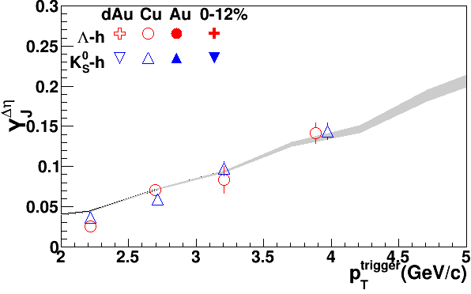
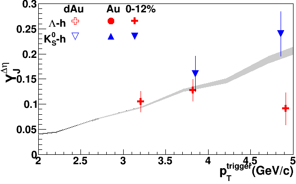
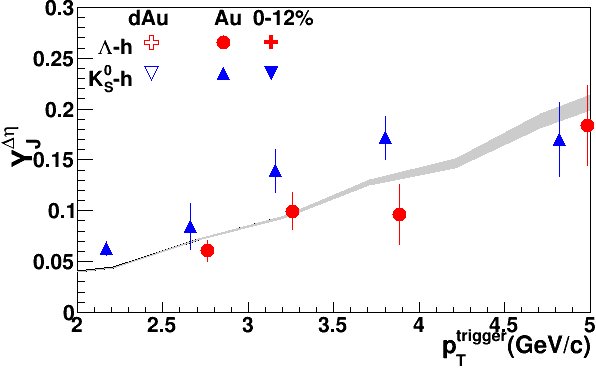
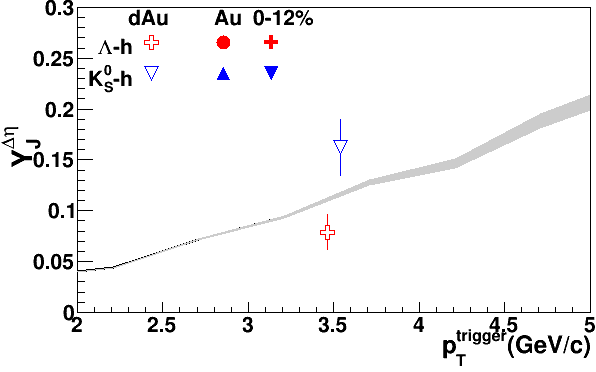
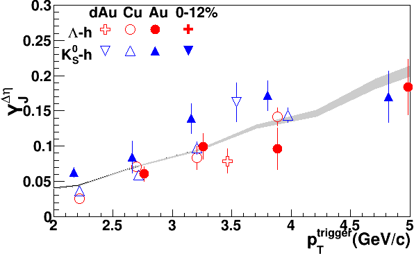
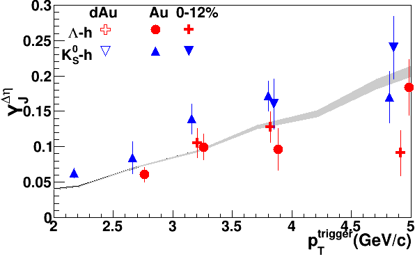

Minutes/tasks below:
GPC follow up:
1. Read current draft (v1.3) of paper and make another round of
comments within the next 3 weeks (sooner is of course better so the PAs
have time to look at them before the meeting)
2. Comment on Fig. 4 versions when they are distributed
3. Comment on the PYTHIA discussion highlighted in red and discuss
this over email
4. Respond to the poll for the next meeting http://whenisgood.net/ihsdtzh
(results here: http://whenisgood.net/ihsdtzh/results/e7mtk5b)
PA follow up:
1. Figure 4: Ample discussion, would still prefer this figure
to be less busy, perhaps create multipanel plot. PAs will send
around different versions, comment over email, and when we agree on what
should go into the plot the PAs will work on making it pretty.
versions:
- Cu+Cu, h+h reference
- Au+Au central, h+h reference
- Au+Au peripheral, h+h reference
- d+Au, h+h reference (perhaps fit d+Au in wherever it fits best)
- Cu+Cu, d+Au, peripheral Au+Au
- Au+Au central + peripheral
[Various versions were mentioned in the meeting but it's so easy to create
versions with stuff removed that I will just make lots of versions]
| Cu+Cu, h+h reference |  |
| Au+Au central, h+h reference |  |
| Au+Au peripheral, h+h reference |  |
| d+Au, h+h reference (perhaps fit d+Au in wherever it fits best) |  |
| Cu+Cu, d+Au, peripheral Au+Au |  |
| Au+Au central + peripheral |  |
Minor correction: specify in caption that the data were shifted in
pT (not yield) for visibility) - Done
2. Fig. 6 - band for data Done - note
this produces almost no visible difference because of the logarithmic
scale, don't mention Au+Au in caption, do mention which h-h data
set is the reference - Done
3. Fig. 5 - move legend to the bottom - Done
4. Discussion - change mass ordering to particle type ordering - Done
5. Plots requested by Alex - here
6. Updating the paper web page when Christine's laptop is fixed and
this is easier - Done